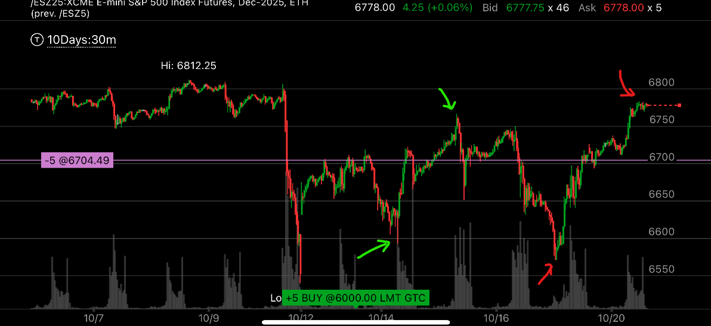
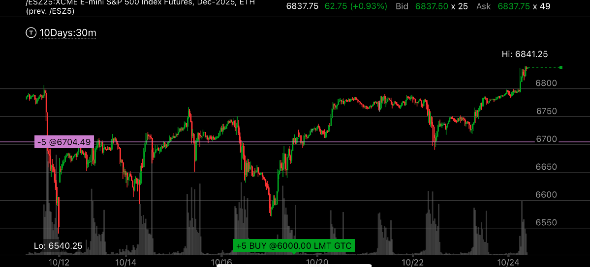
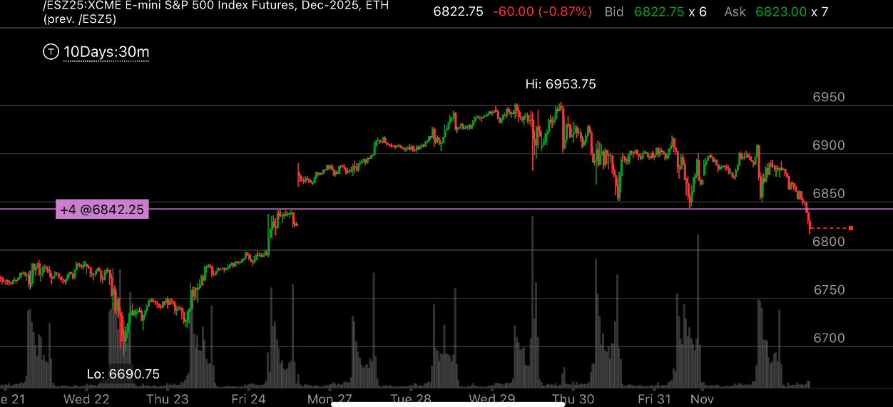

薄壁必然被打破理论
- 如果大盘距离关键点很近，那么这个关键点必然会被破裂。这个关键点可以是第一浪的终点，这种情况下，说明不是五浪结构。
- 如果大盘距离最高点很近，那么它会打破最高点。
- 如果大盘距离最低点很近，那么它会打破最低点。
- 如果大盘出现了尖锐的极点，它未来一定会出现走平的点，那么如果走平的点如果介于尖锐点和最高点或者最低点或者关键点之间，
距离很近，那么这个点未来会被打破。

图示:前面的红色低点是6748. 而大盘从红色高点下跌时候，在6760附近徘徊很久，这个距离太近了。说明未来一定会被打破的。也就是会
低于6748.


图示:绿色是两个尖锐的高点和低点，特别是绿色高点，它距离最高点6812只有一线之遥。 它自己已经是6770了。 如果未来，有一个平走的走势，
一定高于这个点，比如是6780， 这样就更加接近6812了。说明，6812 这个点未来会被打破，说明打破会向继续上涨，不能做空，应该做多。
第二张图可以看到，它的走平走势是6789. 然后很快就突破创新高了。

图示:
- 大盘第一天在6842徘徊很久。第二天高开，然后下来。
- 我以为这个是五浪，那么6842 就是第一浪的终点，它返回后，如果出现第四浪，那么应该高于6842.
- 可以看到30日，31日，大盘两次触碰6848 而尖锐反弹。它必然要有一个低于6848，并且走平的时刻，这时才能真正反弹。
- 但是，这样就离得6842太近了。只有5个点。 几乎不能做到，这样说明，它一定不会在6842反弹，会跌下去的。 那么6842根本也不是第一浪的终点，这个自己就不是五浪，而是超买走势。